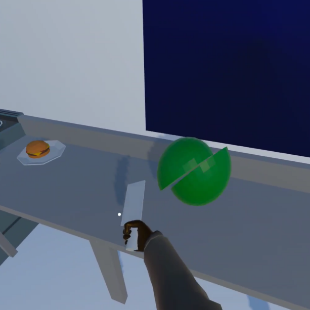
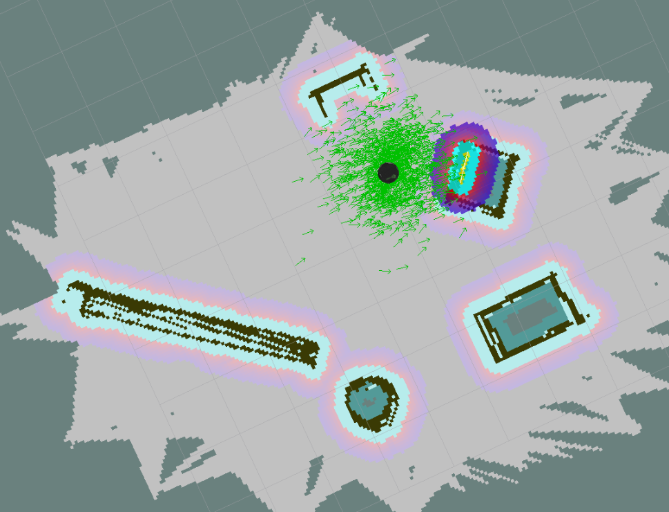
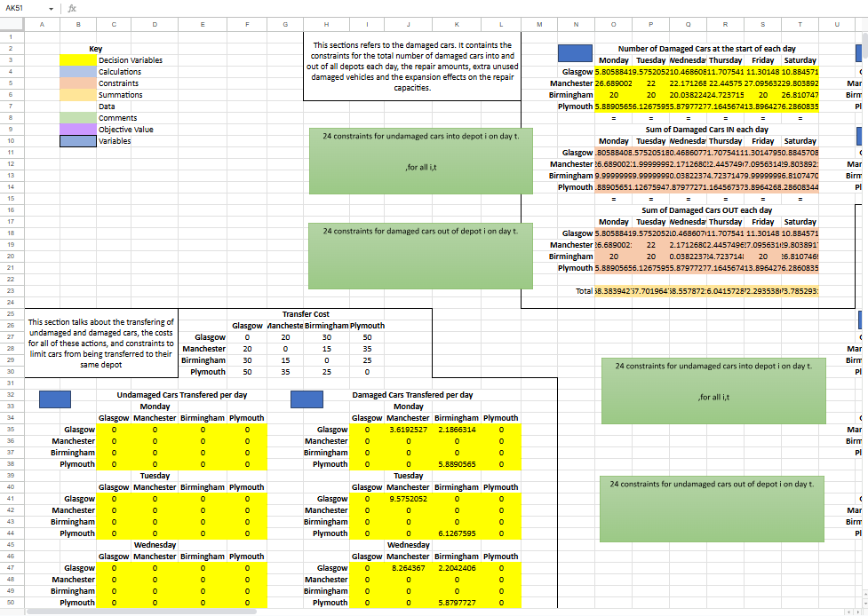
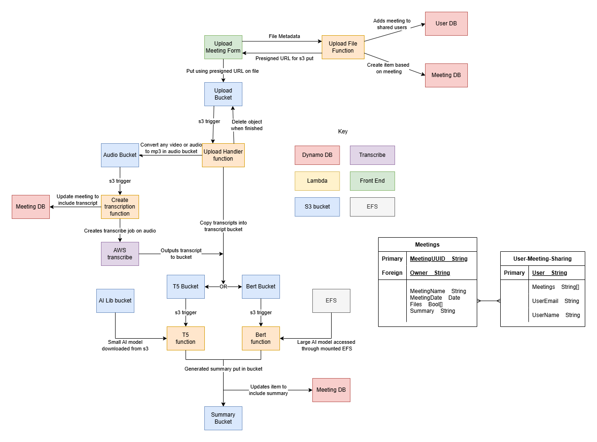
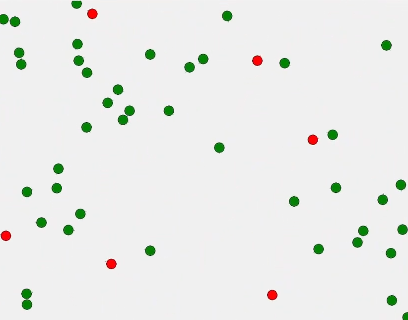
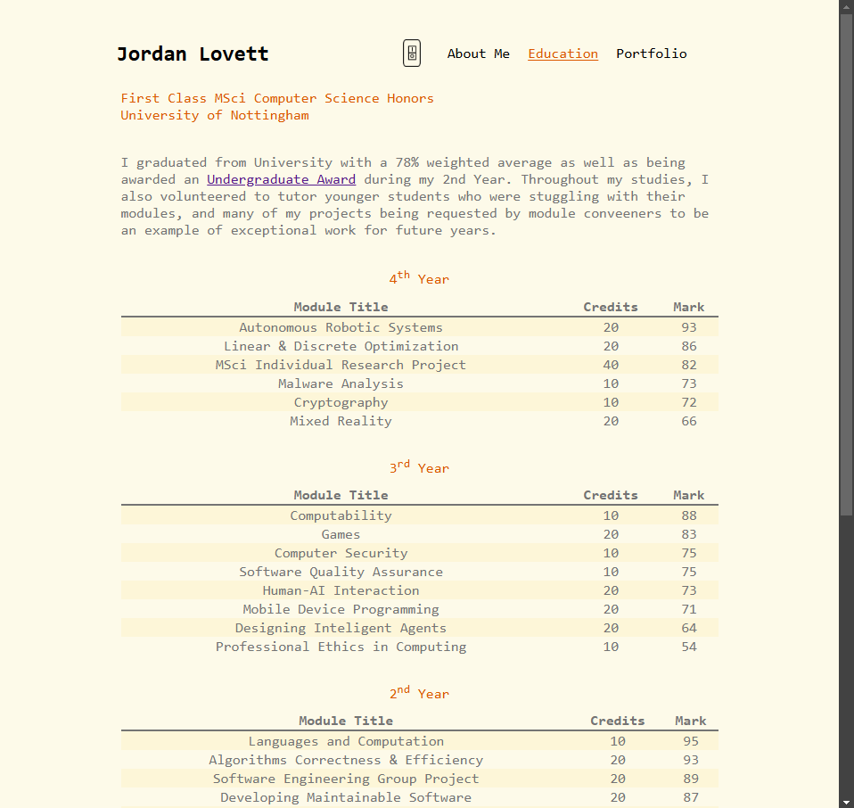

I currently work at Oleeo, where I develop highly configurable and customizable hiring tools for over 100 clients, both internal and external. My work here is currently very broad, with multiple technologies such as Angular and JS for frontend changes to Perl for the backend and APIs. I am also involved in managing data stored in our relational SQL databases using mySQL, where I often have to write complex queries to join multiple tables.
| Module Title | Credits | Mark |
|---|---|---|
| Autonomous Robotic Systems | 20 | 93 |
| Linear & Discrete Optimization | 20 | 86 |
| MSci Individual Research Project | 40 | 82 |
| Malware Analysis | 10 | 73 |
| Cryptography | 10 | 72 |
| Mixed Reality | 20 | 66 |
| Module Title | Credits | Mark |
|---|---|---|
| Computability | 10 | 88 |
| Games | 20 | 83 |
| Computer Security | 10 | 75 |
| Software Quality Assurance | 10 | 75 |
| Human-AI Interaction | 20 | 73 |
| Mobile Device Programming | 20 | 71 |
| Designing Inteligent Agents | 20 | 64 |
| Professional Ethics in Computing | 10 | 54 |
| Module Title | Credits | Mark |
|---|---|---|
| Languages and Computation | 10 | 95 |
| Algorithms Correctness & Efficiency | 20 | 93 |
| Software Engineering Group Project | 20 | 89 |
| Developing Maintainable Software | 20 | 87 |
| Operating Systems & Concurrency | 20 | 84 |
| C++ Programming | 10 | 79 |
| Introduction to Image Processing | 10 | 79 |
| Human Computer Interaction | 10 | 72 |
| Module Title | Credits | Mark |
|---|---|---|
| Computer Fundamentals | 10 | 95 |
| Systems & Architecture | 20 | 93 |
| Programming & Algorithms | 20 | 90 |
| Databases & Interfaces | 10 | 88 |
| Fundamentals of AI | 10 | 85 |
| Fundamentals of Software Engineering | 10 | 85 |
| Math 1 | 10 | 76 |
| Programming Paradigms | 20 | 72 |
| Math 2 | 10 | 70 |
-
Evaluating visual feedback techniques and object behaviours in VR
My final year university project: designing and creating a VR experience where the user performs a number of cooking tasks. During the tasks, the relationships between the physical and virtual worlds are manipulated to explore how visual behaviours impact the proprioception and immersion of users.
This project was created in Unity with a Meta Quest 2 and involved extensive research on VR object manipulation and immersion in games and virtual reality. I really enjoyed working on this project, and it taught me some invaluable insights on how users interact with unfamiliar technology and how that effects the value they get from it.
Read the paper! -
Autonomous Turtlebot
A ROS application to autonomously control a turtlebot. This software performs all tasks from mapping and localisation with SLAM to computer vision for object detection and marking. A pathfinding algorithm using frontiers was also used to traverse unseen locations whilst avoiding objects to run in any environment.
This project is built using python nodes to asynchronously handle the multiple data sources and decision making for a smooth and continuous progression. The nodes are also created to give a combination of performance and accurancy so it can adapt quickly to moving objects in the environment and advance quickly whilst still accurately mapping and identifying the objects it's looking for.
Technical report of this project -
Car Rental Optimisation
An algebraic linear optimisation model for maximising the profit of a car rental company with multiple locations and hundred of decision variables and constraints. This required processing of written information and translating it into mathematical model while still retaining the readibility of the model for comprehension by non-technical stakeholders.
This model was developed based on the Car Rental 1 & 2 problems from H. Paul Williams' Model Buiding in Mathematical Programming. -
CatchMeUp - An online meeting summarizer
As part of a university group project, I was responsible for the devops for a meeting sumarization web application. For this I learnt AWS and developed the full cloud architecture to host, store and process all the data passed into the webapp and make the meeting notes available through a secure account system.
Please click on the image to see the architecture diagram for the final product and a short list of some technologies used. Not included in the diagram is the API gateway for REST APIs, secured with a cognito account system and authentication as well as cloudfront hosting. -
Predator Prey Simulation
A simulation project to model the population fluctuation of predator and prey. This model was developed in python, making use of the tkinter library to model the movement of the creatures. For this I developed a number of different AI agents with varing communication strategies to explore the impact on the emergent behaviours.
A state machine architecture was developed for each individual agent, with predators and agents each having specific movement and vision characteristics to make them as accurate as models to real life creatures as possible. I was able to then plot the findings of the different communication strategies on the emergent behaviours using Pandas to reason about their success as a model for the relationship.
Check it out! -
Portfolio Website (Where you are right now!)
This website was created as a very simple portfolio just to give more insight than a CV or job application on the sorts of things I get up to and the fun side projects I do. Created fully with simple HTML, CSS and Javascript without any frameworks.